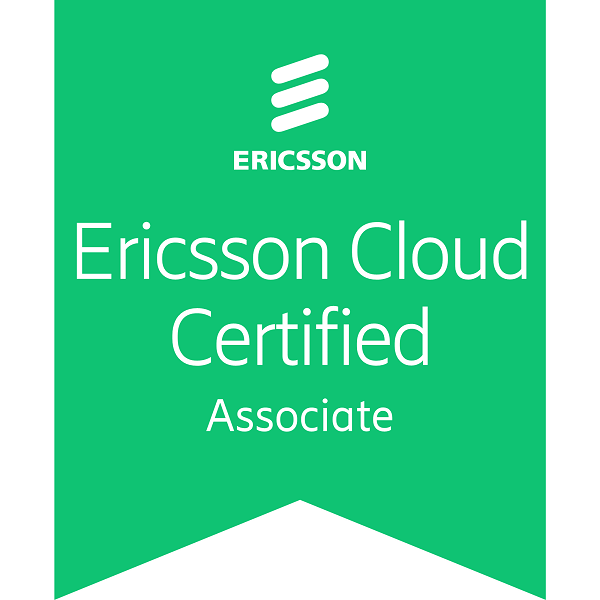
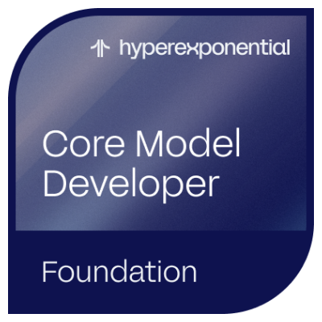
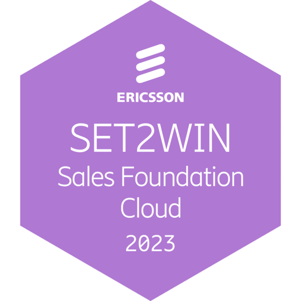
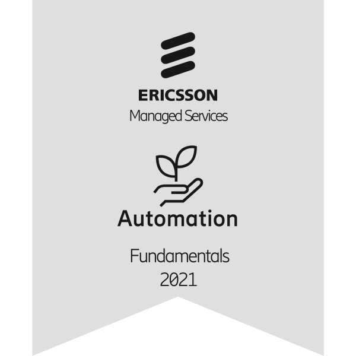

Professional Summary
Multi cloud computing, Linux administration, Kubernetes, OpenStack, expert with over 8+ years of experience can design, integrate, and deploy durable Cloud solutions. Through anticipating issues in large cloud-based environments and scripting ability in Python, Bash, and Ansible, and many other tools, this experience has proven improvements and ingenuities. have excellent critical thinking skills and always focus on the customer’s requirements, have implemented, and supported several clouds to address various enterprise requirements in terms of performance and ability.
Experience
Ericsson | Cloud Engineer
March 2020 – Present
- Conducted over 40+ technical presentations, effectively communicating complex technical concepts and solutions to both technical and non-technical customer stakeholders, resulting in a significant increase up to 50% in client understanding and satisfaction.
- Provided detailed technical documentation, authored 15+ comprehensive technical documents and user guides, facilitating smooth project execution and client onboarding, reducing support tickets by 25%.
- Maintained regular contact with clients to understand their requirements, provide updates on progress, and resolve issues, ensuring maximum customer satisfaction and professional relationships.
- Collaborated with cross-functional teams on 5 major projects, achieving almost a 100% on-time delivery rate.
- Conducted training sessions and workshops to enhance team knowledge of cloud technologies and boost technical skills.
- Experience as an OpenStack/Linux administrator, integrating OpenStack, cloud computing, virtualization, Linux system administration, and configuration management.
- Designed and deployed clouds based on OpenStack and Kubernetes for customers.
- Managed multiple clouds for enterprises on bare metal, virtual machines, and containers to address different project needs.
- Experience with OpenStack components such as Neutron, Nova, Cinder, Horizon, Ceilometer, Heat, Glance, and Swift.
- Created and managed multiple tenants in a cloud, set quotas, triggered alarms, created networks, and customized templates.
- Experience in systems automation using BASH, Python, Perl, and Expect scripting.
- Developed more than 50+ scripts and tools with Python and Bash scripting to automate tasks and improve efficiency, reducing manual tasks by 50%.
- Experience with Docker and SQL.
- Familiarity with monitoring frameworks such as Data Dog, Grafana, Prometheus, and Dynatrace.
- Advanced knowledge in Linux system administration, working across the entire Linux stack from kernel, networking, storage, to applications.
- Practical understanding of network fundamentals (DNS, DHCP, TCP/IP, routing, switching, HTTP) and good troubleshooting skills at all levels.
- Successfully implemented NFVI environments for TE and Etisalat-Misr, receiving customer appreciation for dedication and prompt support.
- Expanded multiple Clusters (Kubernetes) and NFVI for customers in Egypt and the Gulf, managing both hardware and software.
- Provisioned and managed multiple cloud environments for enterprises, utilizing OpenStack components.
- Developed and maintained scripts for automation using Python, Bash, and Expect scripting to streamline operational processes.
- Configured and deployed servers to support new cloud-based applications, resulting in improved scalability and performance.
- Managed NFVI environments for clients like TE and Etisalat-Misr and Orange and STC, receiving customer appreciation for prompt support and dedication.
- Utilized monitoring frameworks (Prometheus, Grafana) to ensure optimal performance and reliability in a 24x7 production environment.
- Created and managed multiple tenants in the cloud, establishing quotas, triggering alarms, and customizing heat templates for resource management.
 Projects Management and Achievements:
Projects Management and Achievements:
Ericsson | L2 Support Engineer
Oct 2018 – Mar 2020
- Created scripts with tools like Python, Bash, and Expect scripting.
- Managed daily tasks using Linux systems.
- Proficient in SQL queries.
- Provided customer support to manage all customer tasks and needs.
- Automated daily and monthly tasks as an Automation Engineer.
- Handled BSS operations in Etisalat Misr Managed Service Project.
- Troubleshot access network problems and outages.Performed BSS network configurations (parameter configuration, new features trials, etc.).
- Implemented cutovers.
- Prepared scripts for expansions and performed expansions during low traffic times (Hardware Expansion, signaling, etc.).
- Handled BSS performance degradation issues.
- Managed network outages and emergencies with the 2nd and 3rd line support teams.
- Conducted new node hardware and functional acceptance tests with the roll-out teams.
- Collected traces and dumps.
- Documented customer support processes and procedures, resulting in a reduction of customer support errors.
- Supported customers with issues by opening CSRs with the global support team and following up on them.
- Team Leader: Managed a team of 8 members, providing daily support and guidance. Conducted knowledge enhancement sessions, addressed team queries, and coordinated with the management team to ensure smooth operations and continuous improvement. Actively contributed to the professional growth and development of team members.
Ericsson | L1 and BackOffice Engineer
Oct 2017 – Oct 2018
- Handled performance degradation issues for the access network.
- Analyzed and corrected configuration errors of Ericsson BSS Nodes.
- Troubleshot access network problems and outages.
- Supported Field Maintenance Engineers' activities on-site for two vendors (ERICSSON - ZTE).
- Performed periodic network backups and health checks to determine network status.
- Analyzed RAN system and KPIs.
- Provided troubleshooting and technical support for all BSS-related nodes.
- Handled customer requests related to BSS and escalated to L2 if required.
- Troubleshot alarms for all BSS-related nodes for two vendors (Ericsson and ZTE).
- Managed tickets and issues escalated from FO or PM and other stakeholders.
- Troubleshot and resolved all incidents, service requests, problems, and trouble tickets.
- Utilized AMOS/MOSHELL, OSS Common, and other Ericsson tools in troubleshooting.
- Investigated and analyzed critical technical faults for the network.
Ericsson | Performance Monitoring Engineer
Mar 2017 – Oct 2017
- Monitored network KPIs and analyzed them for any degradation or abnormalities for Ericsson, ZTE, and Huawei.
- Performed basic troubleshooting to solve problems within team scope.
- Followed pre-agreed escalation processes for unresolved issues.
- Created benchmarking reports to compare network status before and after CR implementations.
- Handled events by monitoring network KPIs during significant times (e.g., Eid, holidays, weekends).
- Conducted first-level troubleshooting on the network within Etisalat Managed Service.
- Responsible for daily and weekly KPI health checks.
Ericsson | Front Office Engineer
Oct 2016 – Mar 2017
- Monitored all alarms, including operator, air conditioning, battery, and DC alarms for Ericsson, ZTE, and Huawei networks.
- Contacted the site retention team for non-permanent alarms based on the area.
- Checked onsite configurations and assisted FM when needed.
- Investigated internal faults on the BTS using fault codes.
- Identified cabinet and TRU types, fault codes, and serial numbers.
- Maintained alarm logs for sites.
- Monitored internal and external alarms of all Ericsson and ZTE sites and servers.
Education
Bachelor’s in Electronics and Communications Engineering
Mansoura University | Oct 2011 – Aug 2016
Skills
- Cloud Technologies
- Containerization: Docker, Kubernetes, OpenShift
- Virtualization: OpenStack
- Automation: Bash, Python, Ansible
- System Administration: Linux, Unix, Windows
- Monitoring: Grafana, Prometheus, Dynatrace, Datadog
- SQL: MySQL
- Network Fundamentals: SDN, DNS, DHCP, TCP/IP, Routing, Switching, HTTP, VRRP
- YAML/JSON
- IAAC: Terraform
- AWS, GCP, Azure
- CI/CD: Git, GitHub Actions
Languages
- English – fluent
- Arabic – native
Badges
   References
Available upon request.